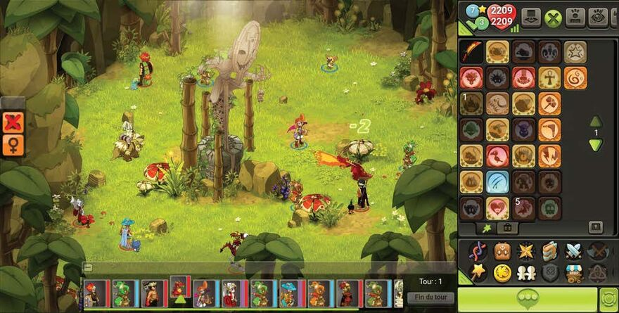

Dofus prend place dans le Monde des Douze, un univers médiéval-fantastique. Les joueurs doivent retrouver six Dofus primordiaux, des œufs de dragons conférant une grande puissance à leur porteur, qui sont dispersés aux quatre coins du monde. Le jeu, en monde ouvert, laisse place à la libre orientation des joueurs, pouvant choisir de s'orienter dans le Joueurs contre Joueurs, Joueurs contre Monstres ou l'économie.
Albion Online est le premier vrai MMO multi-plateforme, disponible sur Windows, Mac, Linux, iOS et Android. Vous choisissez la manière dont votre aventure évolue, à la maison ou sur les chemins !